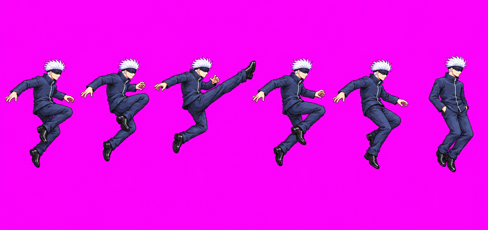

Gojo uair — diagonal retry, relay combat #34
Technical hold; no image approval requested. This round used all three authorized image calls. No compliant packed candidate was produced; Gojo's existing gameplay stand-in remains active. The user asked for an up-and-forward diagonal kick with the shoe inside the 256px cell, the peak no more than about one head above the hair, and hands following the pocket schedule.
Call 1 — held
Diagonal kick reads, but full figure exceeds square-cell height.

Original image and hash are recorded in the call ledger.
Call 2 — held
Figures touch cell edges, leaving no safe margin.

Original image and hash are recorded in the call ledger.
Call 3 — held
Per-pose figures remain taller than the implied 256px square cells.

Original image and hash are recorded in the call ledger.
Next action
No `uair_v03.png` was created, and the manifest and packed sheet were not changed. The three-call round is exhausted. A further attempt requires a new user decision.